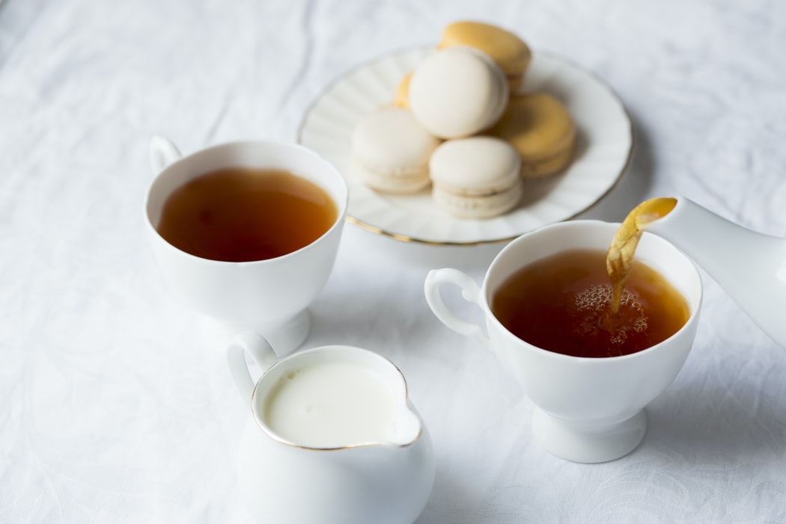
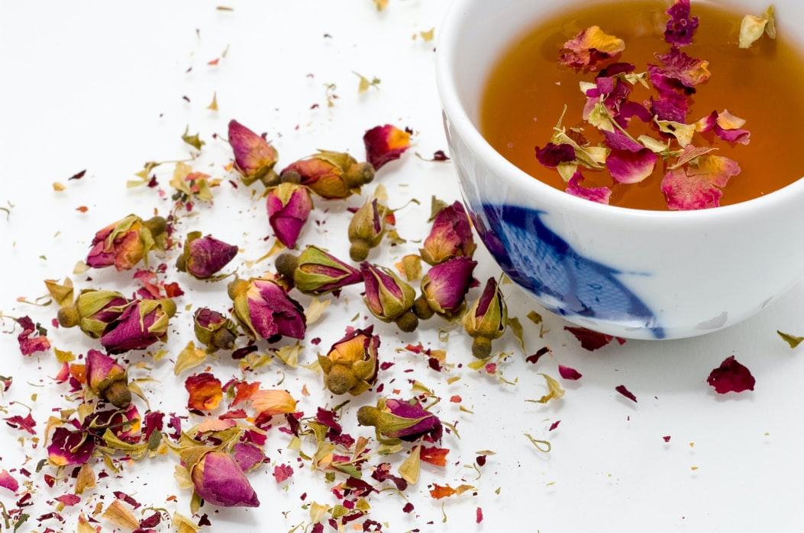
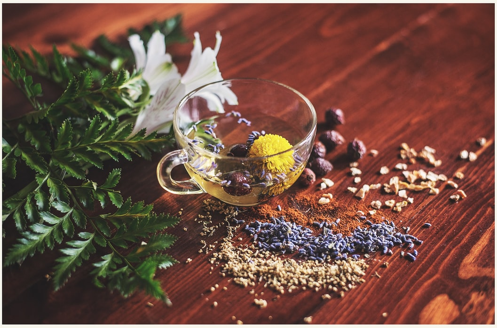

Ceai
Cafeaua este cea care ne poate trezi la simtire dimineata si ne poate ajuta sa ascutim mintea pentru a creste productivitatea de peste zi. Insa consumata atunci cand organismul nostru este extrem de obosit, este ca si cum ne-am dori sa scoatem tot ce e mai bun din calitatile unui cal de tractiune, si pentru asta il biciuim ca el sa porneasca la o sarcina noua in fiecare zi, in loc sa il lasam sa se relaxeze pentru o vreme, ca apoi sa isi gaseasca singur resursele de a continua. Arta relaxarii este aproape intotdeauna, mai cu seama in Orient, asociata cu arta prepararii si consumarii ceaiului. Arta ceaiului este practicata in intreaga lume, de la Maroc la Japonia, fiecare popor avand ritualurile lui transmise mai departe de fiecare generatie in parte. Multa vreme, ritualul oriental al ceaiului a fost considerat, de catre Occidentali mai ales, un moft, insa el isi are de fapt radacinile in tumultul istoric al tarii. Se spune ca arta ceaiului a luat nastere in China, insa ea a atins perfectiunea in momentul in care a ajuns pe teritoriul japonez, influentand nu doar stilul de viata al niponilor, ci deopotriva arta si cultura asiatica. In ce priveste Romania, nu putem discuta despre un cult sau o cultura a ceaiului, de vreme ce romanii au fost educati de-a lungul timpului ca ceaiul reprezinta in primul rand o infuzie din orice planta medicinala sau fruct uscat ori floare, iar unicul scop al licorii rezultate este acela curativ, atunci cand exista un disconfort sau o boala instalata in organism. La fel vom intalni insa si in alte state europene, o lipsa a cunoasterii si recunoasterii ceaiului si ale originilor si calitatilor sale.
Povestea nasterii ceaiului este inspirata de un amestec de mituri si fapte si colorata de concepte antice despre spiritualitate si filozofie.

 Ceai verde
Ceai verde8 lei

Ceai de mentă
10 lei
10 lei

Ceai de ghimbir
20 lei
20 lei

Ceai tonic
12 lei
12 lei